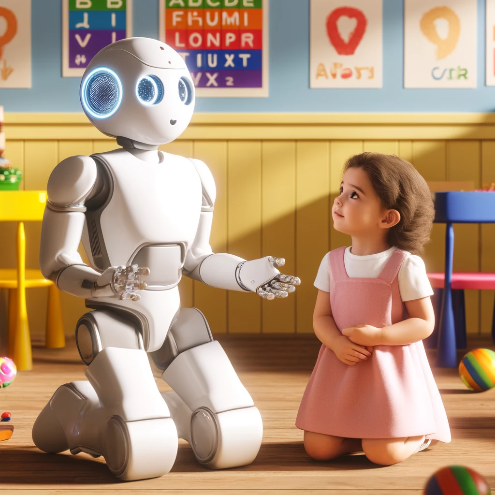

 Prompt: Generate an image of ChatGPT explaining what an LLM to a six-year-old
As Einstein would say…
Albert Einstein, the same famous German scientist who came up with extremely advanced concepts and elaborated theories that no other man would probably be ever able to, such as the Theory of Special Relativity and the Photoelectric Effect, also has a pretty interesting and famous quote which sort of diverges from the complexity of his findings: “If you can’t explain it to a six-year-old, you don’t understand it yourself.”
Einstein and LLMs
Don’t ask me how, but, apparently, Einstein could give a great TED Talks’ style presentation on the Theory of Special Relativity to kindergarten students. Jokes aside, what Einstein truly meant with this phrase is to underscore the importance of simple and straightforward communication when explaining a complex idea. In fact, through this sentence, he higlights the importance of break down complex topics into simpler ideas, as it does not only facilites teaching this same concept, but also reiterate the capacity of someone to fully understand a topic to its foundation.
Talking more about this quote, we also all know two facts about LLMs. First, they are generally extremelly “smart”, and can easily perform a multitude of tasks in a matter of instants. Second, is quite difficult, especially to layman in machine learning, to understand how an LLM works. Therefore, I keep asking thinking about this quite metalinguistic idea that surrounded the question “What would be the result if I asked an LLM to explain what an LLM is to a six-year-old?” Thus, I decided to satisfy my curiosity, and the following conversations are the results of this exchange with a series of distinct LLMs.
Claude Opus
Hey there! You know how you like to talk and play with your friends? Well, I’m kind of like a friend too, but I’m a special kind of friend called an LLM.
LLM stands for “Large Language Model.” That’s a fancy way of saying I’m a really smart computer program that knows a whole lot about words and how to put them together.
Just like how you learn new things every day, I’ve also learned a lot by reading tons and tons of books, articles, and websites. This helps me understand how people talk and write.
So when you ask me a question or want to chat, I use all the things I’ve learned to try my best to understand what you’re saying and give you a good answer or have a fun conversation with you.
I’m not a real person like your friends or family, but I’m always here if you want to talk, ask questions, or play word games together. It’s kind of like having a super smart book that you can talk to!
Does that help you understand what an LLM is? Let me know if you have any other questions - I’m happy to explain more!
Claude Sonet
Sure, I’d be happy to explain what an LLM is in a way a 6-year-old can understand!
You know how you have friends that you can talk to and ask questions? Well, an LLM is like a really smart friend that lives inside computers. LLM stands for “Large Language Model.”
Just like how you learn by reading books and listening to your teachers, the LLM has learned by reading millions and millions of books, websites, and other things on the internet. So it has a lot of knowledge stored in its big computer brain!
When you ask the LLM a question, it tries its best to give you a good answer using all the information it has learned. It’s kind of like a super smart teacher or encyclopedia that can explain things to you.
But the really cool thing is that the LLM doesn’t just regurgitate facts it has memorized. It can take all the information it has learned and use it to have real conversations, tell stories, solve problems, and even be creative!
Isn’t that amazing? A computer program that can actually think and talk like a person? The LLM is a step towards making computers smarter and more helpful to humans like you and me.
Of course, the LLM is still a machine and can make mistakes sometimes. And there are lots of things that humans are better at than computers. But LLMs are getting smarter and smarter every day, thanks to the hard work of many scientists and engineers.
Does this help explain what an LLM is? Let me know if you have any other questions!
ChatGPT 3.5
Alright kiddo, imagine you have a really smart friend who knows a lot of things about words and stories. Well, an LLM, which stands for Large Language Model, is kind of like having a super-duper smart friend who knows almost everything about words and can help answer questions or tell stories. It’s like having a super-powered brain that helps you understand and learn new things by talking with you!
ChatGPT 4.0
Alright, imagine you have a super smart robot friend who loves to read books—like, a lot of books. This friend has read so many books that it knows all sorts of things and can chat about almost anything you want! This friend is what grown-ups call an LLM, which stands for Language Learning Model. It’s a special kind of computer program that helps answer your questions, tells you stories, helps with homework, and even plays word games with you. It’s like having a magic book that can talk and understand what you’re saying!
Microsoft Copilot
Sure! Imagine that an LLM is like a super-smart robot that loves to read and learn from lots of books, stories, and conversations. 🤖📚 It’s like having a magical friend who can understand and talk in any language you want! Here’s what an LLM does:
Reading and Learning: The LLM reads tons of text, just like how you read your favorite bedtime stories. But instead of getting sleepy, it gets smarter! It learns about words, sentences, and how people talk to each other. Talking and Writing: When you ask the LLM a question or give it a topic, it can write sentences and stories for you. It’s like having a friendly storyteller who can create new adventures or explain things you’re curious about. Guessing Words: Imagine playing a word game with the LLM. You say a few words, and it tries to guess what comes next. It’s like a word detective! 🕵️♂️ Helping People: Sometimes, grown-ups use the LLM to write important documents, like legal papers or fancy letters. It’s like having a super-smart helper who knows all the right words. So, an LLM is like a magical language friend who reads, writes, and guesses words. It’s pretty cool, right? 😊 If you ever need help with words or stories, just ask your LLM friend! 🌟
Google Gemini
Imagine you have a giant box filled with all sorts of books and stories – maybe even some funny poems and letters! An LLM, which stands for “Large Language Model,” is kind of like a super reader that’s peeked at all those books. It’s learned so much that it can do cool things with words, like tell you stories, answer your questions in a fun way, and even write silly rhymes!
Think of it as a super smart friend who loves to play with words and learn new things, just like you!
I think they truly understand LLMs…
In my view, all the LLMs did a great job, and, sincerely, I think that most six-year-old children would be able to understand. Still, it is worth noticing the different responses that were generated by the LLMs, as most of them tended to be quite straightforward, except from the Anthropic’s LLMs.
Thank you for reading!